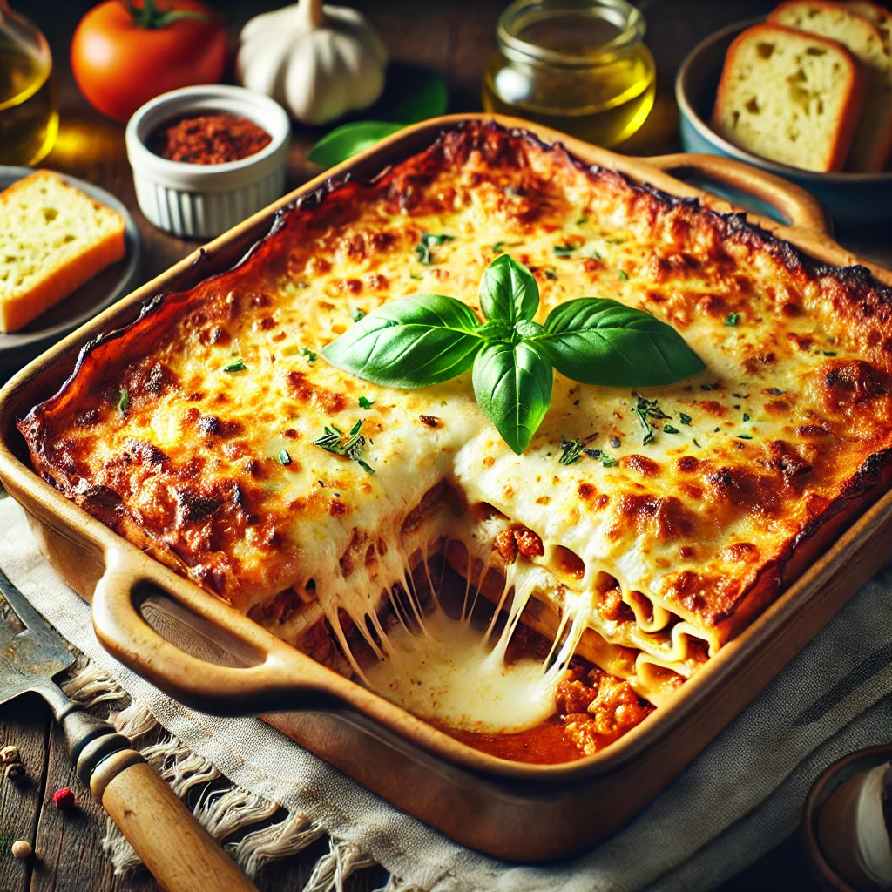

Home

Description
A classic comfort dish, lasagna is a deliciously layered masterpiece of tender pasta, rich meat sauce, creamy ricotta, and melted cheese. Baked to golden perfection, this hearty meal is perfect for family dinners, special occasions, or meal prepping for the week. Every bite is packed with bold flavors, making it a timeless favorite loved by all. Serve it hot with a side of garlic bread and a fresh salad for a complete, satisfying meal!/p>
Ingredients
- 12 lasagna noodles
- 500g ground beef
- 1 onion, chopped
- 2 cloves garlic, minced
- 800g canned tomato sauce
- 2 tablespoons tomato paste
- 1 teaspoon dried oregano
- 1 teaspoon dried basil
- Salt and pepper to taste
- 250g ricotta cheese
- 1 egg
- 200g shredded mozzarella cheese
- 50g grated Parmesan cheese
Steps
- Preheat the oven to 180°C (350°F).
- Cook the lasagna noodles according to package
instructions, then drain and set aside.
- Prepare the meat sauce: In a pan, cook the ground beef with chopped onion and garlic until browned. Drain excess fat.
- Add tomato sauce and seasonings: Stir in tomato sauce, tomato paste, oregano, basil, salt, and pepper. Simmer for 10 minutes.
- Mix the ricotta filling: In a bowl, combine ricotta cheese with the egg and mix well.
-
Assemble the lasagna: In a baking dish, layer as follows:
- A thin layer of meat sauce
- A layer of lasagna noodles
- Spread ricotta mixtur
- Sprinkle mozzarella cheese
- Repeat layers, finishing with meat sauce and mozzarella on top.
- Sprinkle Parmesan cheese over the top.
- Bake for 35-40 minutes until the cheese is golden and bubbly.
- Let it rest for 10 minutes before slicing and serving.